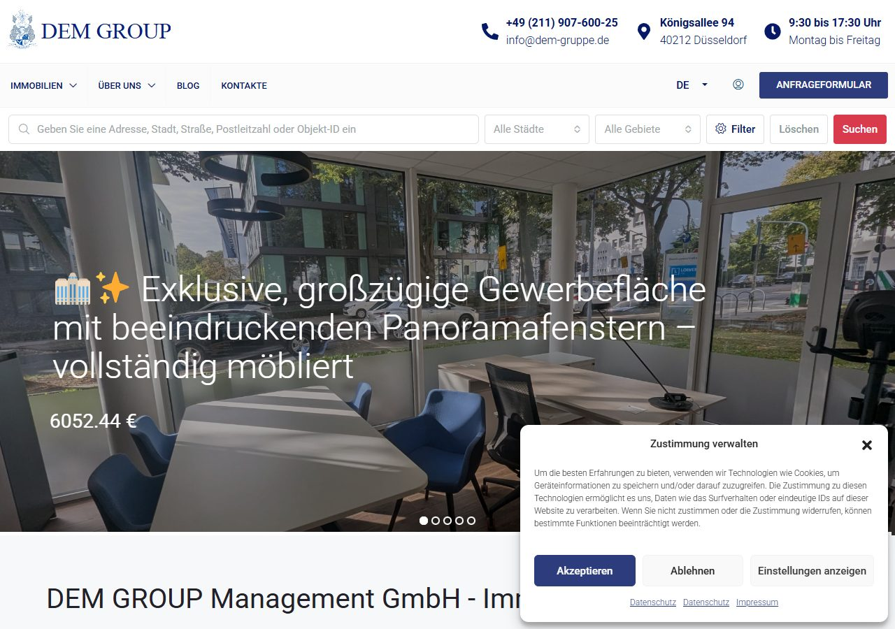

Starkes Angebot an der Kö, aber Google findet die Website kaum
DEM GROUP hat echte Objekte, eine Top-Adresse und eine zweisprachige Website. Trotzdem kommen aus Google fast keine Besucher: Die Website beschäftigt Google mit fast tausend leeren Seiten, lädt auf dem Handy über 20 MB und startet die Besucherstatistik ohne Einwilligung. Die meisten Punkte lassen sich in wenigen Tagen beheben.
Vollständiger Crawl am 10.11.2026, eigene Messungen im Browser und Daten aus SE Ranking (Stand November 2026).
~970von 1.280 gefundenen Seiten sind endlose Wiederholungen derselben Makler-Seite
~5Besucher pro Monat aus Google (Schätzung). Vergleichbarer Makler Immoprofi Fischer: ~70
0Platzierungen unter den ersten 100 bei „Immobilienmakler Düsseldorf“ (1.900 Suchen pro Monat)
9 / 100Ladezeit-Note der Startseite auf dem Handy, 23 MB Datenmenge
vorder Einwilligung starten Google Analytics und Microsoft Clarity
0Verlinkungen als Quelle in ChatGPT, Gemini, Perplexity und Google-KI-Antworten
Das Wichtigste in drei Sätzen
1
Google verliert sich in leeren Seiten.
Die Makler-Seiten lassen sich endlos weiterblättern (Seite 500, Seite 9999 …). Google verschwendet seine Zeit dort, der Server wird überlastet, und die wenigen wichtigen Seiten kommen zu kurz.
2
Die Website ist auf dem Handy sehr langsam.
Die Startseite lädt 21,5 MB Fotos. Auf einer normalen Mobilverbindung erscheint das Hauptbild nach rund 20 Sekunden. Viele Interessenten sind dann schon weg.
3
Für die wichtigsten Suchen gibt es keine passende Seite.
Eigentümer suchen „Immobilienmakler Düsseldorf“, „Immobilie verkaufen Düsseldorf“ oder „Immobilienbewertung Düsseldorf“. DEM GROUP hat dafür keine eigene Seite. Zwei Düsseldorfer Makler teilen sich hier Platz 1.
Was bereits gut ist
Darauf lässt sich aufbauen.
Echte, aktuelle Objekte mit vielen Fotos und klaren Exposés
Vollständige Pflichtangaben im Impressum, inkl. Maklererlaubnis nach § 34c und Handelsregister
Zwei Sprachen mit korrekten Sprachverweisen für Google
Repräsentative Adresse Königsallee 94, gut sichtbar mit Öffnungszeiten
Cookie-Banner und Seitenverzeichnis für Google sind vorhanden
Kaum kaputte Links: nur eine fehlerhafte Adresse auf der ganzen Website
A · Datenschutz und Vertrauen
Diese Punkte sind für Besucher zum Teil sichtbar und bergen Abmahnrisiken. Die rechtliche Bewertung gehört in die Hände Ihrer Datenschutz- oder Rechtsberatung, die technische Umsetzung übernehme ich.
1 · Statistik startet, bevor Besucher zustimmen
2–3 Std.
Problem
Der Cookie-Banner fragt nach Zustimmung, doch schon vorher werden Google Analytics und Microsoft Clarity (zeichnet Klicks und Mausbewegungen auf) geladen und Daten an Google und Microsoft gesendet. In einem frischen Browser ohne jede Auswahl gemessen.
Lösung
Google-Tags und Clarity erst nach Zustimmung laden lassen, zusätzlich den Google-Einwilligungsmodus aktivieren. Danach erneut messen.
Bringt
Der Banner tut, was er verspricht. Weniger Abmahnrisiko, und die Zahlen in Analytics bleiben trotzdem nutzbar.
Technik
GTM GTM-5VMCM5P8 und gtag GT-WRGJZM8N werden von Site Kit mit type="text/javascript" eingebunden, Complianz blockiert sie nicht; kein gtag('consent','default'). Vor Klick: g/collect, Cookies _ga/_ga_T1F3QMW9L9, clarity.js + 4× clarity.ms/collect, Trustindex-Loader.

Aufnahme vom 10.11.2026 in einem frischen Browser ohne gespeicherte Auswahl. Der Banner wartet noch auf eine Entscheidung. Zu diesem Zeitpunkt war bereits Folgendes passiert:
Sekunde
Dienst
Was passiert
2,4
Google Fonts
Schriften werden von Google-Servern geladen
2,4
Google Tag
Analyse-Skript wird geladen
2,4
Trustindex
Skript des Bewertungsdienstes wird geladen
2,9
Google Tag Manager
Container GTM-5VMCM5P8 wird geladen
4,4
Microsoft Clarity
Aufzeichnungs-Skript wird geladen
4,5
Google Analytics
Besuch wird gemeldet, Cookies _ga werden gesetzt
4,9–10,4
Microsoft Clarity
4× Aufzeichnungsdaten gesendet
2 · Datenschutzerklärung nennt die eingesetzten Dienste nicht
2–3 Std. + Prüfung
Problem
Die Datenschutzerklärung beschreibt nur YouTube und Google Maps. Google Analytics, Google Tag Manager, Microsoft Clarity, der Bewertungsdienst Trustindex, Google Fonts und das Cookie-Tool fehlen. Außerdem steht dort eine andere E-Mail-Adresse (de@) als im Impressum (info@).
Lösung
Liste aller tatsächlich eingesetzten Dienste erstellen (liefere ich), Text ergänzen und von der Rechtsberatung freigeben lassen.
Bringt
Eine Erklärung, die zur Website passt. Das ist die Grundlage, falls ein Besucher oder eine Behörde nachfragt.
Technik
e-recht24-Vorlage; Abschnitte zu Hosting/Server-Logs, Analyse und Einwilligungsverwaltung fehlen.
3 · Private E-Mail-Adresse eines Mitarbeiters öffentlich
15–30 Min.
Problem
Eine Autorenseite verwendet als Namen die private Gmail-Adresse eines Mitarbeiters. Sie steht in der Adresse der Seite, im Seitentitel und 14-mal im Text. Spam-Programme sammeln solche Adressen automatisch ein.
Lösung
Im WordPress-Benutzerprofil einen Anzeigenamen setzen und die Autorenseiten abschalten oder auf die Teamseite umleiten.
Bringt
Schutz der Mitarbeiterdaten und ein professioneller Eindruck.
Technik
/author/r…-gmail-com/ (200, noindex). User-Nicename = E-Mail; Author-Archive deaktivieren bzw. 301 auf /immobilienmakler/.
4 · Google-Schriften werden direkt von Google geladen
1 Std.
Problem
Beim Aufruf jeder Seite überträgt der Browser die IP-Adresse des Besuchers an Google, um Schriften zu laden. Für genau diesen Fall gab es in Deutschland bereits Urteile und Abmahnwellen.
Lösung
Schriften auf dem eigenen Server ablegen. Ein Teil liegt dort schon, nur das Theme lädt sie zusätzlich von Google.
Bringt
Weniger Rechtsrisiko und eine schnellere Seite.
Technik
fonts.googleapis.com/css?family=Roboto…|Plus Jakarta Sans (Houzez/Redux) und css2?family=Roboto (Child-Theme-Header); Elementor „Google Fonts lokal laden“ ist bereits aktiv.
5 · Impressum mit veralteten Angaben
30 Min.
Problem
Das Impressum beruft sich auf ein Gesetz, das 2024 ersetzt wurde, und verlinkt die EU-Streitschlichtungsplattform, die seit Juli 2025 abgeschaltet ist. Bei der Aufsichtsbehörde fehlt die Anschrift. Im Namen der Geschäftsführerin steckt einmal ein kyrillischer Buchstabe statt eines lateinischen „a“.
Lösung
Text aktualisieren (Vorschlag liefere ich), Rechtsberatung gibt frei.
Jede Seite enthält ein Anmeldefenster für Besucher, obwohl es keinen Kundenbereich gibt. Im Quelltext dieses Fensters steht der Demo-Satz „Benutzer-Registrierung ist deaktiviert für demo-Zwecke“, den Google mitliest. Der Cookie-Banner mischt Deutsch und Englisch. Im Verzeichnis für Google stehen 14 Seiten wie „Rechnungen“, „Mein Profil“ oder „Informationen zur Mitgliedschaft“, die für Besucher keinen Sinn ergeben.
Lösung
Anmeldefunktion ausblenden, Banner vollständig übersetzen, Systemseiten aus dem Verzeichnis nehmen und für Google sperren.
Bringt
Die Website wirkt wie ein fertiges Maklerangebot und nicht wie eine Vorlage.
Technik
Houzez-Login-Modal; page-sitemap.xml: dashboard, rechnungen, mein-profil, meine-immobilien, bestellung-abschliessen, informationen-zur-mitgliedschaft u. a., alle index, follow.
B · Damit Google die Website richtig versteht
7 · Endlos blätterbare Makler-Seiten
1–2 Std.
Problem
Die Seiten der Makler und der Agentur lassen sich beliebig weiterblättern. Jede Seitenzahl öffnet eine vollständige Makler-Seite, auch Seite 500. Für Besucher unsichtbar enthält jede davon einen Link „Mehr laden“ auf die nächste Zahl, dem Suchmaschinen folgen. Von 1.280 Seiten, die ein Suchroboter findet, sind rund 970 solche Kopien. Beim Crawl ist der Server darunter zusammengebrochen (11 Fehler „502“).
Lösung
Nicht vorhandene Seitenzahlen mit „Seite nicht gefunden“ beantworten und das Weiterblättern auf die echte Seitenzahl begrenzen.
Bringt
Google konzentriert sich auf Objekte und Leistungsseiten. Weniger Serverlast, weniger Ausfälle.
Technik
/agent/*/page/N/, /agentur/*/page/N/ + EN liefern für jedes N 200 („Keine Auflistung gefunden“) mit a.houzez-infinite-load[data-page=N+1] im versteckten Tab #tab-properties, Canonical auf Seite 1. Template prüft max_num_pages nicht → 404 erzwingen, Load-more-Link nur bei data-total > 0.
Aufgerufene Adresse (10.11.2026)
Antwort
Inhalt
Link weiter auf
/agent/evgeny-katsman/
200
Makler-Seite mit Objekten
Seite 2
…/page/2/
200
„Keine Auflistung gefunden“
Seite 3
…/page/100/
200
„Keine Auflistung gefunden“
Seite 101
…/page/500/
200
„Keine Auflistung gefunden“
Seite 501
…/page/9999/
200
„Keine Auflistung gefunden“
Seite 10000
8 · Die Steuerungsdatei für Suchmaschinen fehlt
15 Min.
Problem
Jede Website sollte Suchmaschinen über eine kleine Datei sagen, was sie nicht crawlen sollen und wo das Seitenverzeichnis liegt. Bei DEM GROUP gibt es diese Datei nicht (Fehlerseite).
Lösung
Datei anlegen, Seitenverzeichnis eintragen, Such- und Systemseiten ausschließen.
Bringt
Google findet neue Objekte schneller und ignoriert interne Seiten.
Technik
/robots.txt → 404 von nginx (nicht von WordPress) → statische Datei oder try_files auf index.php.
9 · Dreifache Umleitung, auch für Schriften
30–60 Min.
Problem
Wer dem-gruppe.de eingibt, wird dreimal hin- und hergeleitet, bevor die Seite lädt. Die Schriftdateien der Website sind über genau diese alte Adresse eingebunden, deshalb läuft jede einzelne Schrift durch drei Umleitungen, auf der Startseite 162-mal.
Lösung
Eine einzige direkte Umleitung auf https://www.dem-gruppe.de einrichten und die Schrift-Adressen korrigieren.
Bringt
Spürbar schnellerer Seitenaufbau, sauberes Signal an Google.
Auf rund 280 Seiten (deutsch und englisch) führt ein Link auf eine Fehlerseite. Ein englisches Exposé leitet außerdem auf die deutsche Fassung um.
Lösung
Link auf die richtige Seite setzen, englische Fassung des Exposés anlegen.
Bringt
Keine Sackgassen für Besucher und Google.
Technik
/?p=21092 und /en/?p=21092 → 404 (gelöschter Beitrag, Kurzlink). /en/property/restaurant-in-47137-duisburg/ → DE.
11 · Seitentitel und Überschriften unklar
0,5–1 Tag
Problem
Fast alle deutschen Seiten tragen im Google-Titel den englischen Zusatz „Real estate in Germany“. 253 Seiten haben keinen Beschreibungstext für Google, 30 Seiten denselben Titel. Auf der englischen Startseite und der Blogseite fehlt die Hauptüberschrift, 116 Seiten haben mehrere.
Lösung
Titel-Schema je Sprache, Beschreibungen für Objekte und Leistungsseiten, eine klare Hauptüberschrift je Seite.
Bringt
Mehr Klicks aus den Suchergebnissen, weil der Eintrag zeigt, was die Seite bietet.
Technik
Suffix - DEM GROUP - Real estate in Germany aus WPML-String / SEO-Plugin; H1 fehlt auf /en/, /blog/, /anfrageformular/; 172 Titles > 60 Zeichen.
C · Ladezeit
Gemessen mit Lighthouse, demselben Prüfprogramm, das hinter Google PageSpeed Insights steht (Note 0–100, ab 90 gut). Einzelmessung vom 10.11.2026.
Die Startseite lädt auf dem Handy 21,5 MB Bilder, so viel wie etwa 10 Musikalben in MP3. Einzelne Fotos wiegen über 1 MB, darunter unbearbeitete WhatsApp-Bilder in großer Auflösung.
Lösung
Bilder automatisch verkleinern und in ein modernes Format umwandeln, Fotos unterhalb des sichtbaren Bereichs erst beim Scrollen laden.
Bringt
Startseite auf dem Handy in wenigen Sekunden statt rund 20. Bessere Bewertung durch Google.
Technik
Slider/Grid lädt -1536x1152.jpg für ~400 px Kacheln; WebP/AVIF + srcset/sizes, loading="lazy". SF: 1.143 Bilder > 100 KB.
13 · Die Seite springt beim Laden
2–4 Std.
Problem
Während die Seite lädt, verschieben sich Inhalte mehrfach. Besucher tippen dadurch daneben. Beim Exposé am Computer ist der Wert achtmal schlechter als die Grenze, die Google als „schlecht“ einstuft.
Lösung
Feste Größen für Bilder, Slider und Kopfbereich hinterlegen.
Bringt
Ruhiger Seitenaufbau, weniger Fehlklicks, bessere Google-Werte.
Der Server braucht 1,2 bis 2,4 Sekunden, bevor er überhaupt antwortet. Danach laden 45 Skripte, darunter Slider, Seitenbaukasten und Zusatzmodule, die auf vielen Seiten nicht gebraucht werden.
Schnellere Antwort auf jeder Seite, weniger Serverlast.
Technik
TTFB 1,2–2,4 s (kein Full-Page-Cache erkennbar); Slider Revolution, Elementor, Redux, WPML; nginx-Version im Header sichtbar, Sicherheits-Header (HSTS, X-Content-Type-Options, Referrer-Policy) fehlen.
D · Inhalte, die Anfragen bringen
15 · Keine Seite für „Makler Düsseldorf“, „verkaufen“ und „bewerten“
2–3 Tage
Problem
Eigentümer suchen nach einem Makler, nach „Immobilie verkaufen Düsseldorf“ oder nach einer Bewertung. Für keine dieser Suchen gibt es bei DEM GROUP eine eigene Seite. Die Teamseite „Immobilienmakler“ hat kaum eigenen Text.
Lösung
Drei Leistungsseiten: Makler in Düsseldorf, Immobilie verkaufen, kostenlose Bewertung. Jede mit Ablauf, Referenzen, Ansprechpartner und Anfrageformular.
Bringt
Eine Chance auf die Suchen, die Verkaufsaufträge bringen. Zusammen über 2.800 Suchen pro Monat.
Der Blog hat acht Artikel. Darunter sind der Weihnachtsmarkt in Herne, ein Krankenhaus-Ranking, Osterbräuche und Grenzkontrollen in Polen. Für Eigentümer und Anleger in Düsseldorf ist das ohne Nutzen, und Google erkennt dadurch schlechter, wofür DEM GROUP steht.
Lösung
Fachfremde Artikel entfernen oder umleiten. Stattdessen wenige, gründliche Ratgeber: Mehrfamilienhaus als Kapitalanlage in NRW, Ablauf eines Verkaufs, Kaufnebenkosten, Mietrendite in Düsseldorfer Stadtteilen.
Bringt
Inhalte, die Anleger suchen und die KI-Assistenten als Quelle zitieren.
Technik
Eigener Text pro Artikel ~150–370 Wörter (Gesamt 612–839 abzüglich ~465 Wörter Seitenrahmen). Kategorie „Immobilienmarkt“ enthält Charité- und Weihnachtsmarkt-Beiträge.
17 · Rund 100 Listen-Seiten ohne eigenen Text
0,5 Tag
Problem
Seiten wie „Solingen“, „Krefeld“, „Balkon“, „Parkplätze“ oder „Online-Besichtigung“ zeigen nur eine Objektliste ohne einen Satz eigenen Text. Google bewertet solche Seiten als dünn.
Lösung
Die wichtigen Städte (Düsseldorf, Duisburg, Köln) mit einem kurzen Marktabsatz ausstatten, die übrigen für Google sperren.
Bringt
Weniger Ballast, mehr Gewicht für die Seiten, die Anfragen bringen.
Technik
Taxonomien stadt (24), ausstattung (27), immobilien-bezeichnung (21), immobilienart (19), immobilien-status (16), DE+EN, alle indexierbar und in der Sitemap.
18 · Kaum Empfehlungen von anderen Websites
laufend
Problem
Nur 4 Websites verlinken DEM GROUP so, dass Google den Link als Empfehlung zählt. Bei Spormann sind es über 300, bei KOCO über 200.
Lösung
Einträge in Makler- und Branchenverzeichnissen, Google-Unternehmensprofil, Kooperationen (Notare, Finanzierer, Hausverwaltungen), Pressemitteilungen zu Verkäufen.
Bringt
Mehr Vertrauen bei Google, Grundlage für bessere Platzierungen.
Technik
SE Ranking Backlinks: 44 verweisende Domains, davon 4 dofollow, 49 von 59 Links mit Anchor „dem-gruppe.de“.
Wo die Konkurrenz in Düsseldorf steht
Eigenständige Düsseldorfer Makler, keine Franchise-Büros. Geschätzte Besucher aus Google pro Monat und weitere Werte aus SE Ranking, November 2026.
„Empfehlende Websites“ = andere Domains mit einem Link, den Google als Empfehlung zählt (dofollow). In den Suchergebnissen stehen außerdem Franchise-Netzwerke und Portale (Engel & Völkers, Von Poll, Dahler, McMakler, Homeday, ImmoScout24). Ihre Zahlen gelten bundesweit und sind hier bewusst nicht verglichen.
Der faire Vergleich: Am ehesten vergleichbar ist Immoprofi Fischer, ebenfalls an der Königsallee und ähnlich aufgestellt. Fischer hat mit einer schlanken Website rund 14-mal so viele Besucher. Tobias Bartsch zeigt, wie schnell es gehen kann: Die neue Website hat seit August aus dem Stand 34 Besucher pro Monat erreicht. Spormann und KOCO sind die Messlatte für „Makler Düsseldorf“.
Verkäufer-Suchen
Hier suchen Eigentümer, die verkaufen oder bewerten lassen wollen. Zahl = Platz in Google.
Suche
Suchen / Monat
DEM GROUP
Spormann
KOCO
Fischer
immobilienmakler düsseldorf
1.900
–
1
1
–
makler düsseldorf
610
–
1
1
–
immobilienbewertung düsseldorf
170
–
–
1
–
immobilie verkaufen düsseldorf
110
–
3
7
–
wohnung verkaufen düsseldorf
40
–
6
–
–
„–“ = nicht unter den ersten 100 Ergebnissen. Zwei Websites können sich Platz 1 teilen, wenn Google zu unterschiedlichen Zeitpunkten gemessen hat.
Investment-Suchen: ein freies Feld
Suchen von Anlegern. Hier ist keiner der Düsseldorfer Makler vorne, die Plätze gehören Portalen. Mit Mehrfamilienhäusern und Anlageobjekten in NRW passt DEM GROUP genau hierher.
Suche
Suchen / Monat
DEM GROUP
Spormann
KOCO
immobilien als kapitalanlage
1.300
–
–
–
mehrfamilienhaus kaufen düsseldorf
480
–
–
–
mehrfamilienhaus kaufen nrw
260
–
–
–
gewerbeimmobilien düsseldorf
210
–
–
–
anlageimmobilien kaufen
140
–
–
–
Was das heißt: Bei den Verkäufer-Suchen braucht DEM GROUP zuerst eigene Seiten (Punkt 15), dann Geduld. Bei den Investment-Suchen sind die lokalen Makler genauso schwach wie DEM GROUP heute. Mit einer guten Seite „Mehrfamilienhaus kaufen in NRW“ und passenden Ratgebern kann DEM GROUP dieses Feld als Erster besetzen.
Besucher aus Google: zwei Jahre im Vergleich
Geschätzte Besucher pro Monat, November 2024 bis November 2026 (SE Ranking). Mit der Maus über die Grafik fahren, um die Monatswerte zu sehen.
Werte als Tabelle
Was das heißt: DEM GROUP liegt seit zwei Jahren nahe null. Die kleinen Ausschläge 2026 kommen fast nur von fachfremden Blogartikeln und Namen anderer Makler, nicht von Düsseldorfer Kaufinteressenten oder Eigentümern. Spormann hat seine Besucher in derselben Zeit verachtfacht.
Wer in KI-Antworten auftaucht
Wie oft ChatGPT, Gemini, Perplexity und die KI-Antworten in Google eine Website als Quelle verlinken. SE Ranking, November 2026.
Makler
Google-KI-Antworten
ChatGPT
Gemini / Perplexity
DEM GROUP
0
0
0
KOCO Immobilien
18
1
0
Tobias Bartsch
3
0
0
Immoprofi Fischer
2
0
0
Spormann
0
0
0
Was das heißt: Wer eine KI nach einem Makler oder einem Anlageobjekt in Düsseldorf fragt, bekommt DEM GROUP heute nicht genannt. Das Feld ist aber noch offen: Selbst Spormann wird nicht verlinkt. KI-Assistenten zitieren vor allem gründliche Ratgeber mit klaren Fakten und Websites mit sauberen Firmendaten. Die Punkte 11, 15 und 16 legen dafür die Grundlage.
Fahrplan
Woche 1Recht & Sofortmaßnahmen
Punkte 1–6: Einwilligung, Datenschutzerklärung, Schriften, Impressum, Demo-Reste
Punkte 7, 8 und 10: endlose Seiten stoppen, Steuerungsdatei, kaputter Link
Woche 2Tempo
Punkte 9, 12–14: Umleitungen, Bilder, Seitensprünge, Cache
Punkt 11: Titel und Überschriften
Kontrollmessung, Bericht mit Vorher/Nachher
Monat 2–3Wachstum
Punkt 15: Seiten „Makler Düsseldorf“, „Immobilie verkaufen“, „Bewertung“
Investment-Seite „Mehrfamilienhaus kaufen in NRW“ und erste Ratgeber (Punkt 16)
Punkte 17 und 18: Listen-Seiten aufräumen, Verzeichnisse und Google-Unternehmensprofil
Vollständiger Crawl der Website (Screaming Frog, 10.11.2026), Nachprüfung der Befunde auf der Live-Website, Einwilligungstest in einem frischen Browser ohne gespeicherte Auswahl, Ladezeit-Messung mit Lighthouse 13 sowie die SEO-Datenbank SE Ranking (Stand November 2026). Alle Zahlen zu Besuchern und Positionen sind Schätzungen externer Datenbanken und ersetzen keine Daten aus Google Search Console oder Analytics. Die Hinweise zu Datenschutz und Impressum sind technische Beobachtungen, keine Rechtsberatung.
Digital-Check dem-gruppe.de · по состоянию на 10.11.2026
Сильное предложение на Кё, но Google сайт почти не находит
У DEM GROUP реальные объекты, престижный адрес и двуязычный сайт. Но из Google посетителей почти нет: сайт занимает Google почти тысячей пустых страниц, на телефоне грузит больше 20 МБ и запускает статистику без согласия посетителя. Большинство пунктов исправляется за несколько дней.
Serhii Panchenko · веб-разработка и SEOТолько открытые данные, без внутренних доступов
Коротко в цифрах
Полный обход сайта 10.11.2026, собственные замеры в браузере и данные SE Ranking (ноябрь 2026).
~970из 1 280 найденных страниц — бесконечные повторы одной и той же страницы маклера
~5посетителей в месяц из Google (оценка). Сопоставимый маклер Immoprofi Fischer: ~70
0позиций в первой сотне по «Immobilienmakler Düsseldorf» (1 900 запросов в месяц)
9 / 100оценка скорости главной страницы на телефоне, 23 МБ данных
досогласия запускаются Google Analytics и Microsoft Clarity
0ссылок на сайт как на источник в ChatGPT, Gemini, Perplexity и ИИ-ответах Google
Главное в трёх предложениях
1
Google теряется в пустых страницах.
Страницы маклеров можно листать бесконечно (страница 500, страница 9999 …). Google тратит на них время, сервер перегружается, а важным страницам внимания не хватает.
2
На телефоне сайт очень медленный.
Главная грузит 21,5 МБ фотографий. При обычной мобильной связи главное изображение появляется примерно через 20 секунд. Многие уходят раньше.
3
Для главных запросов нет подходящей страницы.
Собственники ищут «Immobilienmakler Düsseldorf», «Immobilie verkaufen Düsseldorf», «Immobilienbewertung Düsseldorf». Отдельной страницы под это у DEM GROUP нет. Первое место делят два дюссельдорфских маклера.
Что уже хорошо
На это можно опираться.
Реальные актуальные объекты с большим количеством фото и понятными экспозе
Полные обязательные данные в импрессуме, включая лицензию § 34c и торговый реестр
Два языка с правильными языковыми ссылками для Google
Представительский адрес Königsallee 94, хорошо виден вместе с часами работы
Есть cookie-баннер и карта сайта для Google
Почти нет битых ссылок: только один ошибочный адрес на весь сайт
A · Защита данных и доверие
Часть пунктов видна посетителям, часть несёт риск предупреждений (Abmahnung). Юридическую оценку даёт ваш консультант по защите данных или юрист, техническую реализацию беру на себя.
1 · Статистика запускается до согласия посетителя
2–3 ч
Проблема
Cookie-баннер спрашивает согласие, но ещё до ответа загружаются Google Analytics и Microsoft Clarity (записывает клики и движения мыши), данные уходят в Google и Microsoft. Проверено в чистом браузере без какого-либо выбора.
Решение
Загружать теги Google и Clarity только после согласия, дополнительно включить режим согласия Google (Consent Mode). Затем перемерить.
Польза
Баннер делает то, что обещает. Меньше риска претензий, а цифры в Analytics остаются пригодными.
Для разработчика
GTM GTM-5VMCM5P8 и gtag GT-WRGJZM8N вставляет Site Kit с type="text/javascript", Complianz их не блокирует; нет gtag('consent','default'). До клика: g/collect, cookies _ga/_ga_T1F3QMW9L9, clarity.js + 4× clarity.ms/collect, загрузчик Trustindex.
Снимок от 10.11.2026 в чистом браузере без сохранённого выбора. Баннер ещё ждёт решения. К этому моменту уже произошло следующее:
Секунда
Сервис
Что происходит
2,4
Google Fonts
шрифты грузятся с серверов Google
2,4
Google Tag
загружается скрипт аналитики
2,4
Trustindex
загружается скрипт сервиса отзывов
2,9
Google Tag Manager
загружается контейнер GTM-5VMCM5P8
4,4
Microsoft Clarity
загружается скрипт записи сессий
4,5
Google Analytics
визит отправлен, ставятся cookies _ga
4,9–10,4
Microsoft Clarity
4 отправки данных записи
2 · Политика конфиденциальности не называет используемые сервисы
2–3 ч + проверка
Проблема
В Datenschutzerklärung описаны только YouTube и Google Maps. Нет Google Analytics, Google Tag Manager, Microsoft Clarity, сервиса отзывов Trustindex, Google Fonts и самого cookie-инструмента. К тому же там указан другой e-mail (de@), чем в импрессуме (info@).
Решение
Составить список всех реально используемых сервисов (подготовлю), дополнить текст и согласовать с юристом.
Польза
Политика соответствует сайту. Это основа на случай вопроса от посетителя или ведомства.
Для разработчика
Шаблон e-recht24; нет разделов о хостинге/логах сервера, аналитике и управлении согласиями.
3 · Личный e-mail сотрудника в открытом доступе
15–30 мин
Проблема
Страница автора использует в качестве имени личный Gmail-адрес сотрудника. Он стоит в адресе страницы, в заголовке и 14 раз в тексте. Спам-программы собирают такие адреса автоматически.
Решение
Задать в профиле WordPress отображаемое имя, страницы авторов отключить или перенаправить на страницу команды.
Польза
Защита данных сотрудника и профессиональное впечатление.
Для разработчика
/author/r…-gmail-com/ (200, noindex). User nicename = e-mail; отключить author-архивы или 301 на /immobilienmakler/.
4 · Шрифты Google грузятся напрямую с серверов Google
1 ч
Проблема
При открытии любой страницы браузер передаёт IP-адрес посетителя в Google, чтобы загрузить шрифты. Именно по этому поводу в Германии уже были судебные решения и волны предупреждений.
Решение
Хранить шрифты на своём сервере. Часть уже лежит там, просто тема дополнительно тянет их из Google.
Польза
Меньше юридического риска и быстрее страница.
Для разработчика
fonts.googleapis.com/css?family=Roboto…|Plus Jakarta Sans (Houzez/Redux) и css2?family=Roboto (header дочерней темы); локальная загрузка шрифтов в Elementor уже включена.
5 · Устаревшие данные в импрессуме
30 мин
Проблема
Импрессум ссылается на закон, заменённый в 2024 году, и на платформу ЕС для урегулирования споров, закрытую в июле 2025. У надзорного органа не указан адрес. В имени управляющей одна буква «а» набрана кириллицей вместо латиницы.
Решение
Обновить текст (предложу формулировки), юрист утверждает.
Польза
Актуальный импрессум без поводов для претензий.
Для разработчика
«§ 5 TMG» → § 5 DDG; убрать ссылку ODR (регламент 524/2013 отменён); в «Demidovа» символ U+0430.
6 · Видны остатки демо-версии темы
1–2 ч
Проблема
На каждой странице есть окно входа для посетителей, хотя личного кабинета нет. В коде этого окна стоит демо-фраза «Benutzer-Registrierung ist deaktiviert für demo-Zwecke», которую читает Google. Cookie-баннер смешивает немецкий и английский. В карте сайта для Google 14 страниц вроде «Счета», «Мой профиль», «Информация о членстве», которые посетителям не нужны.
Решение
Скрыть функцию входа, полностью перевести баннер, убрать системные страницы из карты сайта и закрыть от Google.
Польза
Сайт выглядит как готовое предложение маклера, а не как шаблон.
Для разработчика
Login-модалка Houzez; page-sitemap.xml: dashboard, rechnungen, mein-profil, meine-immobilien, bestellung-abschliessen, informationen-zur-mitgliedschaft и др., все index, follow.
B · Чтобы Google правильно понимал сайт
7 · Бесконечно листаемые страницы маклеров
1–2 ч
Проблема
Страницы маклеров и агентства можно листать сколько угодно. Любой номер открывает полноценную страницу маклера, в том числе страница 500. Невидимо для посетителей на каждой из них есть ссылка «Mehr laden» на следующий номер, по которой идут поисковики. Из 1 280 страниц, которые находит поисковый робот, около 970 — такие копии. Во время обхода сервер под этой нагрузкой начал сбоить (11 ошибок «502»).
Решение
На несуществующие номера страниц отвечать «страница не найдена» и ограничить листание реальным числом страниц.
Польза
Google сосредоточится на объектах и страницах услуг. Меньше нагрузки на сервер и сбоев.
Для разработчика
/agent/*/page/N/, /agentur/*/page/N/ + EN отдают 200 для любого N («Keine Auflistung gefunden») с a.houzez-infinite-load[data-page=N+1] в скрытой вкладке #tab-properties, canonical на первую. Шаблон не проверяет max_num_pages → принудительный 404, ссылку load-more выводить только при data-total > 0.
Открытый адрес (10.11.2026)
Ответ
Содержимое
Ссылка дальше на
/agent/evgeny-katsman/
200
страница маклера с объектами
страницу 2
…/page/2/
200
«Keine Auflistung gefunden»
страницу 3
…/page/100/
200
«Keine Auflistung gefunden»
страницу 101
…/page/500/
200
«Keine Auflistung gefunden»
страницу 501
…/page/9999/
200
«Keine Auflistung gefunden»
страницу 10000
8 · Нет управляющего файла для поисковиков
15 мин
Проблема
Каждый сайт должен через небольшой файл сообщать поисковикам, что не обходить и где лежит карта сайта. У DEM GROUP такого файла нет (страница ошибки).
Решение
Создать файл, указать карту сайта, исключить поиск и системные страницы.
Польза
Google быстрее находит новые объекты и игнорирует служебные страницы.
Для разработчика
/robots.txt → 404 от nginx (не от WordPress) → статический файл или try_files на index.php.
9 · Тройное перенаправление, в том числе для шрифтов
30–60 мин
Проблема
Кто вводит dem-gruppe.de, проходит три перенаправления, прежде чем страница загрузится. Файлы шрифтов подключены именно через этот старый адрес, поэтому каждый шрифт идёт через три перенаправления — на главной 162 раза.
Решение
Одно прямое перенаправление на https://www.dem-gruppe.de и исправить адреса шрифтов.
Польза
Заметно быстрее загрузка, чистый сигнал для Google.
Примерно на 280 страницах (немецких и английских) ссылка ведёт на страницу ошибки. Кроме того, одно английское экспозе перенаправляет на немецкую версию.
Решение
Поставить правильную ссылку, создать английскую версию экспозе.
Польза
Нет тупиков ни для посетителей, ни для Google.
Для разработчика
/?p=21092 и /en/?p=21092 → 404 (удалённая запись, короткая ссылка). /en/property/restaurant-in-47137-duisburg/ → DE.
11 · Нечёткие заголовки страниц
0,5–1 день
Проблема
Почти все немецкие страницы несут в заголовке для Google английский хвост «Real estate in Germany». У 253 страниц нет описания для Google, у 30 одинаковый заголовок. На английской главной и странице блога нет главного заголовка, у 116 страниц их несколько.
Решение
Схема заголовков для каждого языка, описания для объектов и услуг, один понятный главный заголовок на страницу.
Польза
Больше кликов из выдачи, потому что запись показывает, что предлагает страница.
Для разработчика
Суффикс - DEM GROUP - Real estate in Germany из строки WPML / SEO-плагина; нет H1 на /en/, /blog/, /anfrageformular/; 172 title > 60 символов.
C · Скорость загрузки
Замер Lighthouse — та же программа, что стоит за Google PageSpeed Insights (оценка 0–100, от 90 хорошо). Однократный замер 10.11.2026.
Главная на телефоне загружает 21,5 МБ изображений — примерно как 10 музыкальных альбомов в MP3. Отдельные фото весят больше 1 МБ, среди них необработанные снимки из WhatsApp в большом разрешении.
Решение
Автоматически уменьшать изображения и переводить в современный формат, фото ниже первого экрана грузить только при прокрутке.
Польза
Главная на телефоне открывается за несколько секунд вместо примерно 20. Лучше оценка Google.
Для разработчика
Слайдер/сетка грузят -1536x1152.jpg для плиток ~400 px; WebP/AVIF + srcset/sizes, loading="lazy". SF: 1 143 изображения > 100 КБ.
13 · Страница «прыгает» при загрузке
2–4 ч
Проблема
Пока страница грузится, содержимое несколько раз сдвигается. Посетители из-за этого промахиваются. У экспозе на компьютере значение в восемь раз хуже границы, которую Google считает «плохой».
Решение
Задать фиксированные размеры для изображений, слайдера и шапки.
Польза
Спокойная загрузка, меньше ошибочных нажатий, лучше показатели Google.
Для разработчика
CLS: главная 0,40 (моб.) / 0,96 (десктоп), экспозе 0,82 / 2,45. 2 413 <img> без width/height.
14 · Медленный сервер, много программного кода
0,5–1 день
Проблема
Сервер думает 1,2–2,4 секунды, прежде чем вообще ответить. Затем грузятся 45 скриптов, включая слайдер, конструктор страниц и дополнительные модули, которые на многих страницах не нужны.
Быстрее ответ на каждой странице, меньше нагрузка на сервер.
Для разработчика
TTFB 1,2–2,4 с (full-page cache не виден); Slider Revolution, Elementor, Redux, WPML; версия nginx в заголовке, нет security-заголовков (HSTS, X-Content-Type-Options, Referrer-Policy).
D · Контент, который приносит заявки
15 · Нет страниц под «маклер Дюссельдорф», «продать» и «оценить»
2–3 дня
Проблема
Собственники ищут маклера, «Immobilie verkaufen Düsseldorf» или оценку. Ни под один из этих запросов у DEM GROUP нет отдельной страницы. На странице команды «Immobilienmakler» почти нет своего текста.
Решение
Три страницы услуг: маклер в Дюссельдорфе, продажа недвижимости, бесплатная оценка. На каждой — порядок работы, референсы, контактное лицо и форма заявки.
Польза
Шанс на запросы, которые приносят заказы на продажу. Вместе больше 2 800 запросов в месяц.
Для разработчика
Частотность DE (SE Ranking): immobilienmakler düsseldorf 1 900, makler düsseldorf 610, immobilienbewertung düsseldorf 170, immobilie verkaufen düsseldorf 110. Добавить разметку RealEstateAgent с адресом и часами работы.
16 · Блог с темами не по профилю
0,5 дня + постоянно
Проблема
В блоге восемь статей. Среди них рождественская ярмарка в Херне, рейтинг больниц, пасхальные обычаи и пограничный контроль в Польше. Собственникам и инвесторам в Дюссельдорфе это не нужно, а Google хуже понимает, чем занимается DEM GROUP.
Решение
Статьи не по теме удалить или перенаправить. Вместо них несколько основательных материалов: многоквартирный дом как инвестиция в NRW, порядок продажи, сопутствующие расходы при покупке, арендная доходность по районам Дюссельдорфа.
Польза
Контент, который ищут инвесторы и который ИИ-ассистенты цитируют как источник.
Для разработчика
Своего текста в статье ~150–370 слов (всего 612–839 минус ~465 слов каркаса страницы). Рубрика «Immobilienmarkt» содержит статьи про Charité и рождественскую ярмарку.
17 · Около 100 страниц-списков без своего текста
0,5 дня
Проблема
Страницы вроде «Золинген», «Крефельд», «Балкон», «Парковка» или «Онлайн-просмотр» показывают только список объектов без единого предложения своего текста. Google считает такие страницы «тонкими».
Решение
Важные города (Дюссельдорф, Дуйсбург, Кёльн) дополнить коротким абзацем о рынке, остальные закрыть от Google.
Польза
Меньше балласта, больше веса у страниц, которые приносят заявки.
Для разработчика
Таксономии stadt (24), ausstattung (27), immobilien-bezeichnung (21), immobilienart (19), immobilien-status (16), DE+EN, все индексируемые и в карте сайта.
18 · Почти нет рекомендаций с других сайтов
постоянно
Проблема
Только 4 сайта ссылаются на DEM GROUP так, что Google засчитывает ссылку как рекомендацию. У Spormann таких больше 300, у KOCO больше 200.
Решение
Каталоги маклеров и отраслевые справочники, профиль компании в Google, партнёрства (нотариусы, финансирование, управляющие компании), пресс-релизы о сделках.
Польза
Больше доверия Google, основа для лучших позиций.
Для разработчика
SE Ranking Backlinks: 44 ссылающихся домена, из них 4 dofollow, 49 из 59 ссылок с анкором «dem-gruppe.de».
Где стоят конкуренты в Дюссельдорфе
Независимые дюссельдорфские маклеры, без франшиз. Оценка посетителей из Google в месяц и другие показатели SE Ranking, ноябрь 2026.
«Рекомендующие сайты» — другие домены со ссылкой, которую Google засчитывает как рекомендацию (dofollow). В выдаче также стоят франшизы и порталы (Engel & Völkers, Von Poll, Dahler, McMakler, Homeday, ImmoScout24). Их цифры общегерманские, поэтому здесь сознательно не сравниваются.
Честное сравнение: ближе всего к DEM GROUP Immoprofi Fischer — тоже на Кёнигсаллее и похож по профилю. У Fischer с простым сайтом примерно в 14 раз больше посетителей. Tobias Bartsch показывает, как быстро это возможно: новый сайт с августа с нуля вышел на 34 посетителя в месяц. Spormann и KOCO — планка для запроса «маклер Дюссельдорф».
Запросы продавцов
Здесь ищут собственники, которые хотят продать или оценить объект. Число = место в Google.
Запрос
Запросов / мес.
DEM GROUP
Spormann
KOCO
Fischer
immobilienmakler düsseldorf
1 900
–
1
1
–
makler düsseldorf
610
–
1
1
–
immobilienbewertung düsseldorf
170
–
–
1
–
immobilie verkaufen düsseldorf
110
–
3
7
–
wohnung verkaufen düsseldorf
40
–
6
–
–
«–» = нет в первой сотне. Два сайта могут делить первое место, если Google измерялся в разное время.
Инвестиционные запросы: свободное поле
Запросы инвесторов. Здесь никто из дюссельдорфских маклеров не впереди, места заняты порталами. С многоквартирными домами и доходными объектами в NRW DEM GROUP как раз сюда подходит.
Запрос
Запросов / мес.
DEM GROUP
Spormann
KOCO
immobilien als kapitalanlage
1 300
–
–
–
mehrfamilienhaus kaufen düsseldorf
480
–
–
–
mehrfamilienhaus kaufen nrw
260
–
–
–
gewerbeimmobilien düsseldorf
210
–
–
–
anlageimmobilien kaufen
140
–
–
–
Что это значит: по запросам продавцов DEM GROUP сначала нужны собственные страницы (пункт 15), потом время. По инвестиционным запросам местные маклеры так же слабы, как DEM GROUP сегодня. С хорошей страницей «Mehrfamilienhaus kaufen in NRW» и подходящими материалами DEM GROUP может занять это поле первым.
Посетители из Google: два года в сравнении
Оценка посетителей в месяц, ноябрь 2024 — ноябрь 2026 (SE Ranking). Наведите мышь на график, чтобы увидеть значения по месяцам.
Значения таблицей
Что это значит: DEM GROUP уже два года держится около нуля. Небольшие всплески в 2026 году дают почти только статьи не по профилю и названия других маклеров, а не покупатели или собственники из Дюссельдорфа. Spormann за то же время увеличил число посетителей в восемь раз.
Кто появляется в ответах ИИ
Как часто ChatGPT, Gemini, Perplexity и ИИ-ответы Google ссылаются на сайт как на источник. SE Ranking, ноябрь 2026.
Маклер
ИИ-ответы Google
ChatGPT
Gemini / Perplexity
DEM GROUP
0
0
0
KOCO Immobilien
18
1
0
Tobias Bartsch
3
0
0
Immoprofi Fischer
2
0
0
Spormann
0
0
0
Что это значит: кто спрашивает ИИ о маклере или доходном объекте в Дюссельдорфе, сегодня DEM GROUP не услышит. Но поле ещё открыто: даже на Spormann ссылок нет. ИИ-ассистенты цитируют прежде всего основательные материалы с чёткими фактами и сайты с аккуратными данными о компании. Пункты 11, 15 и 16 закладывают для этого основу.
План работ
Неделя 1Право и срочное
Пункты 1–6: согласие, политика конфиденциальности, шрифты, импрессум, остатки демо
Пункты 7, 8 и 10: остановить бесконечные страницы, управляющий файл, битая ссылка
Неделя 2Скорость
Пункты 9, 12–14: перенаправления, изображения, «прыжки» страницы, кэш
Пункт 11: заголовки
Контрольный замер, отчёт «до / после»
Месяц 2–3Рост
Пункт 15: страницы «маклер Дюссельдорф», «продать недвижимость», «оценка»
Инвестиционная страница «Mehrfamilienhaus kaufen in NRW» и первые материалы (пункт 16)
Пункты 17 и 18: навести порядок в страницах-списках, каталоги и профиль компании в Google
Ежемесячный отчёт: посетители, заявки, позиции
Что нужно для старта
Google Search Console (доступ на чтение)
Доступ к WordPress, в идеале с тестовой копией
Доступ к Google Tag Manager и Complianz
Контакт хостинга
Что вы получаете
Разработка и SEO из одних рук
Измеримые заявки вместо догадок
Чёткие приоритеты, без редизайна ради редизайна
Ежемесячный отчёт понятным языком, по желанию на русском
Давайте обсудим
С удовольствием разберу все пункты с вами в коротком разговоре, без обязательств.
Полный обход сайта (Screaming Frog, 10.11.2026), перепроверка находок на живом сайте, тест согласия в чистом браузере без сохранённого выбора, замер скорости в Lighthouse 13 и база SE Ranking (ноябрь 2026). Все цифры по посетителям и позициям — оценки внешних баз и не заменяют данные Google Search Console или Analytics. Замечания по защите данных и импрессуму — технические наблюдения, а не юридическая консультация.